Bu rapor, ikinci dönemde projeyi hangi noktaya taşıdığımızı, hangi entegrasyon kararlarını aldığımızı ve ortaya çıkan çalışan ürünün hangi özellikleri sunduğunu özetlemektedir. Rapor boyunca kullanılan görseller, canlı olarak çalışan sistemden alınmış ekran görüntüleridir.
İkinci dönemde ana kararımız, iki farklı projenin güçlü yönlerini koruyarak tek bir nihai sistem üretmek oldu. Bu doğrultuda MoodLens projesi backend çekirdeği olarak, tezv2 projesi ise frontend iskeleti olarak ele alındı. Böylece hem veri, auth ve analiz altyapısı sağlam kaldı hem de kullanıcı arayüzü daha sunulabilir ve modern bir yapıya taşındı.
Doğrudan kopyalama yerine, iki proje arasındaki veri sözleşmeleri yeniden düzenlendi. Özellikle auth, analyze, result, history ve metrics katmanlarında API cevapları ile frontend beklentileri yeniden eşleştirildi. Bu sayede farklı yapılardan tek bir bütüncül ürün elde edildi.
Çıktı olarak TezFinal klasörü altında çalışan, Docker ile ayağa kaldırılabilen, misafir kullanım akışı olan, giriş / kayıt / geçmiş / profil / metrics bölümleri uyumlu şekilde işleyen bir final proje sürümü oluşturuldu.
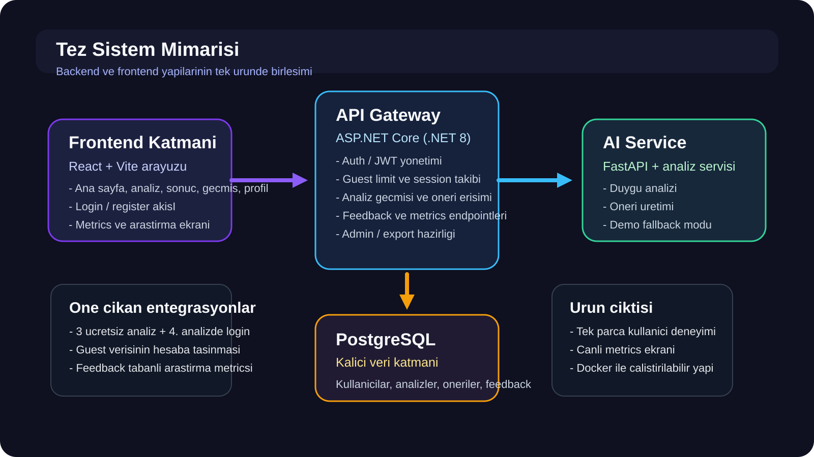
İlk izlenim açısından ürünün ne yaptığını birkaç saniye içinde anlatan, güçlü ve odaklı bir ana sayfa tasarlandı. Bu sayfa, sistemin “duyguyu anla ve öneriyi tek yerde topla” yaklaşımını kullanıcının ilk temasında açık biçimde göstermektedir.
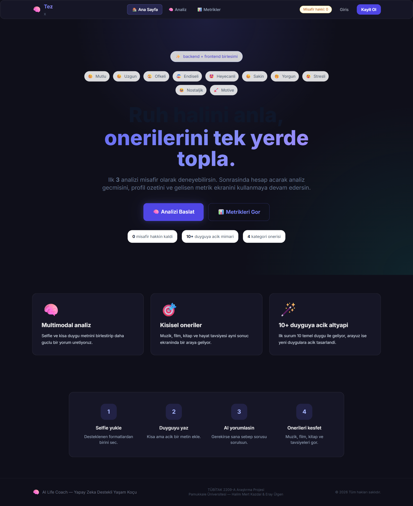
Bu dönemde öne çıkan kurallardan biri, sistemi tamamen kapatmadan kontrollü biçimde açmak oldu. Buna göre kullanıcı ilk üç analizi misafir olarak deneyebilmekte, dördüncü analiz denemesinde ise kayıt / giriş zorunlu hale gelmektedir. Böylece hem ürünü deneyimleme fırsatı korunmakta hem de veri bütünlüğü için kullanıcı hesabına geçiş teşvik edilmektedir.
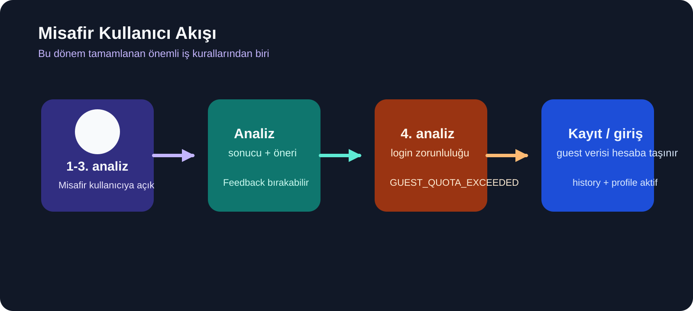
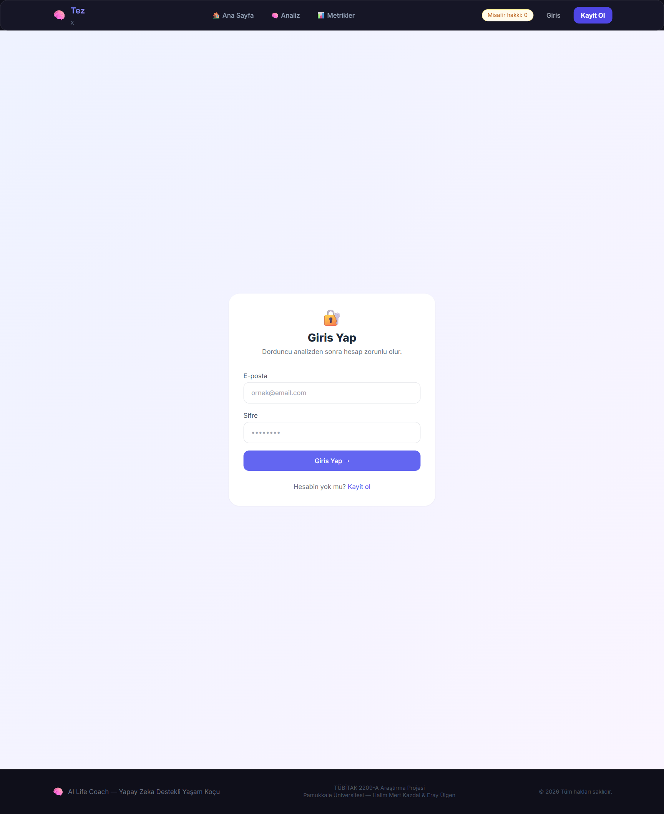
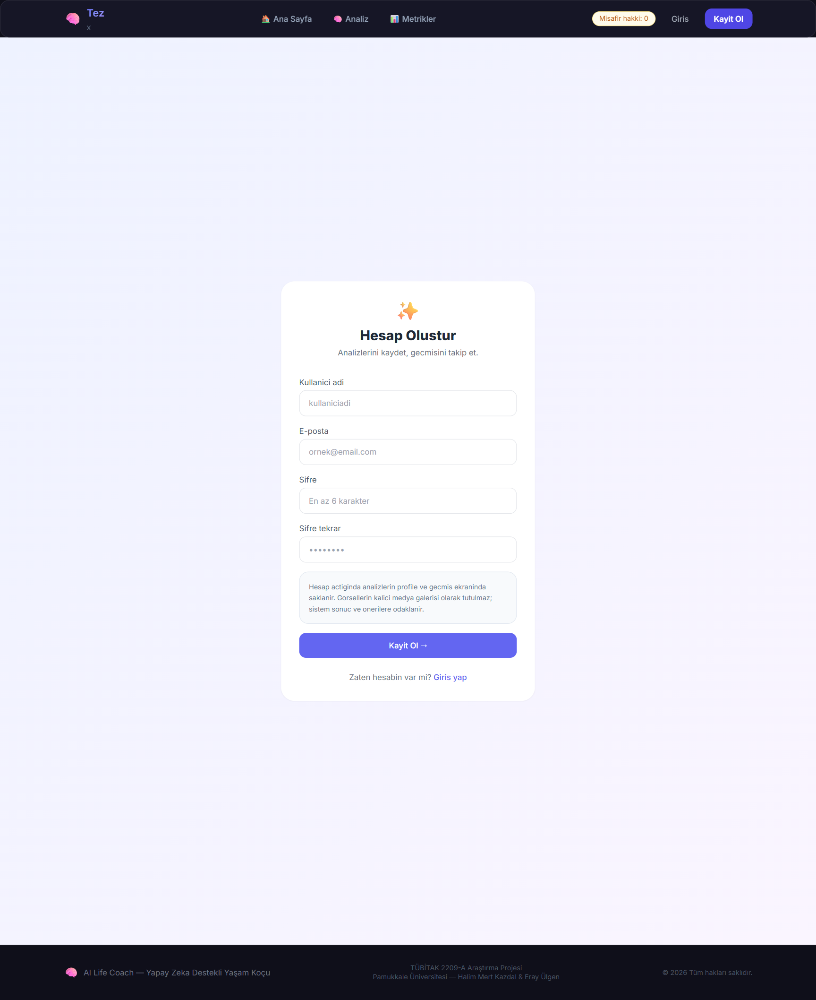
Analiz ekranı, selfie ve metin verisini birlikte alacak şekilde yeniden düzenlenmiştir. Kullanıcı bir yandan duygu durumunu yazılı olarak ifade ederken, diğer yandan görsel verisini sisteme iletmekte ve bu iki kanal birlikte işlenmektedir. Ayrıca gerektiğinde follow-up sebep sorusu mantığıyla analiz derinleştirilmektedir.
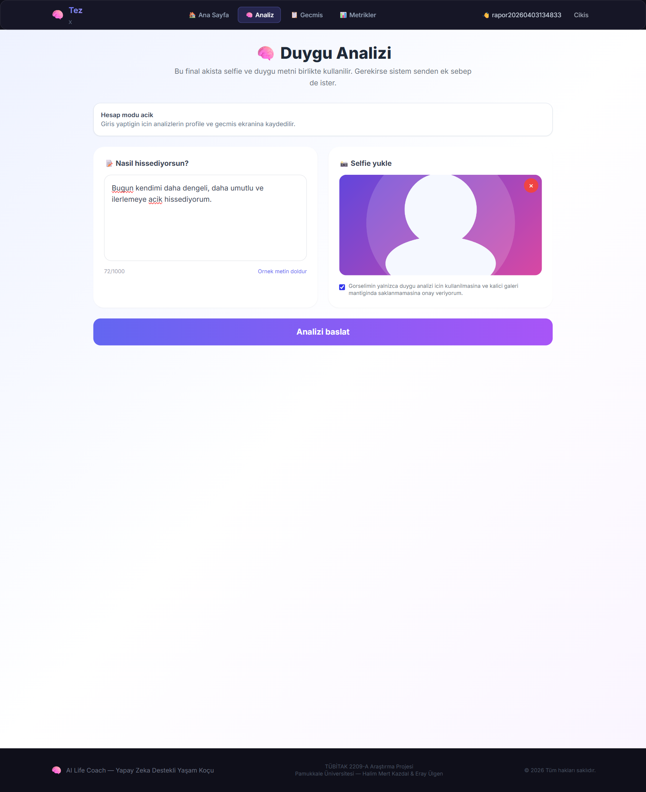
Dosya yükleme, görsel önizleme, misafir limiti bilgilendirmesi ve kullanıcı onayı yeniden bağlandı.
Frontend artık görsel + metin verisini MoodLens backend kontratına uygun şekilde göndermektedir.
Sistem, sonucu vermeden önce gerekirse ek sebep isteyerek daha tutarlı analiz üretmeye yönelmektedir.
Sonuç ekranı, kullanıcının tespit edilen duygusunu, güven oranını ve bu duyguya uygun önerileri tek ekranda toplamaktadır. Müzik, film, kitap ve tavsiye kartlarının aynı akışta sunulması, sistemi yalnızca analiz üreten değil, kullanıcıya anlamlı çıktı veren bir ürün haline getirmiştir.
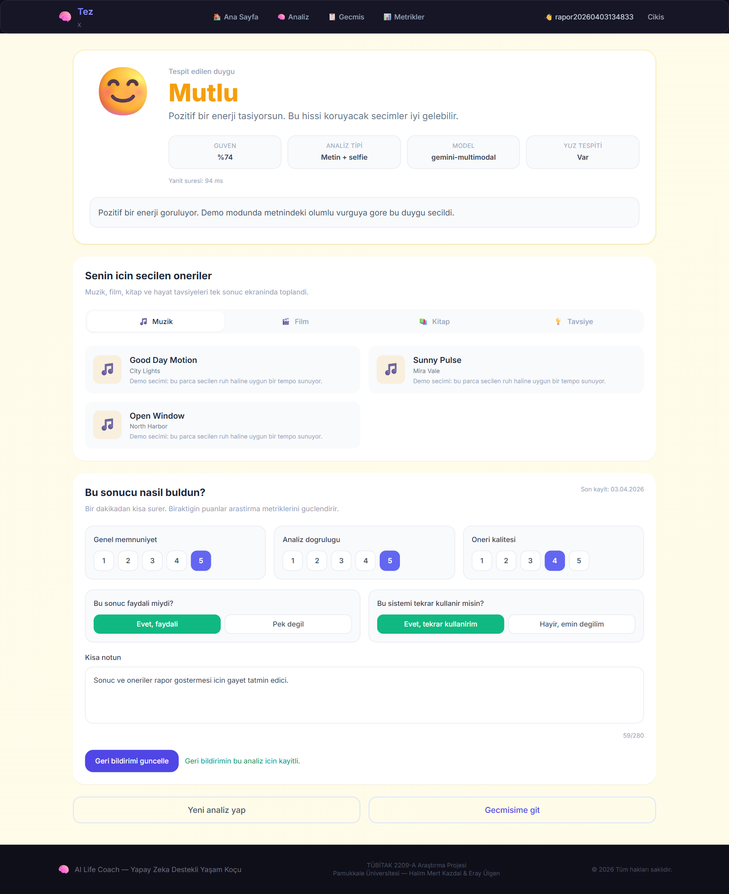
Kullanıcı hesabı ile birlikte sistem artık analiz geçmişini, temel profil özetini ve hesapla ilişkili kontrol alanlarını sunmaktadır. Özellikle misafir kullanıcının daha sonra hesabına geçmesi halinde geçmiş verilerinin korunması, bu dönemin önemli entegrasyon çıktılarından biridir.
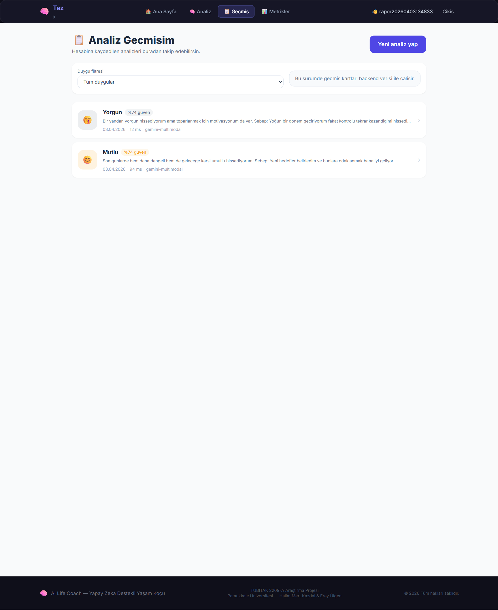
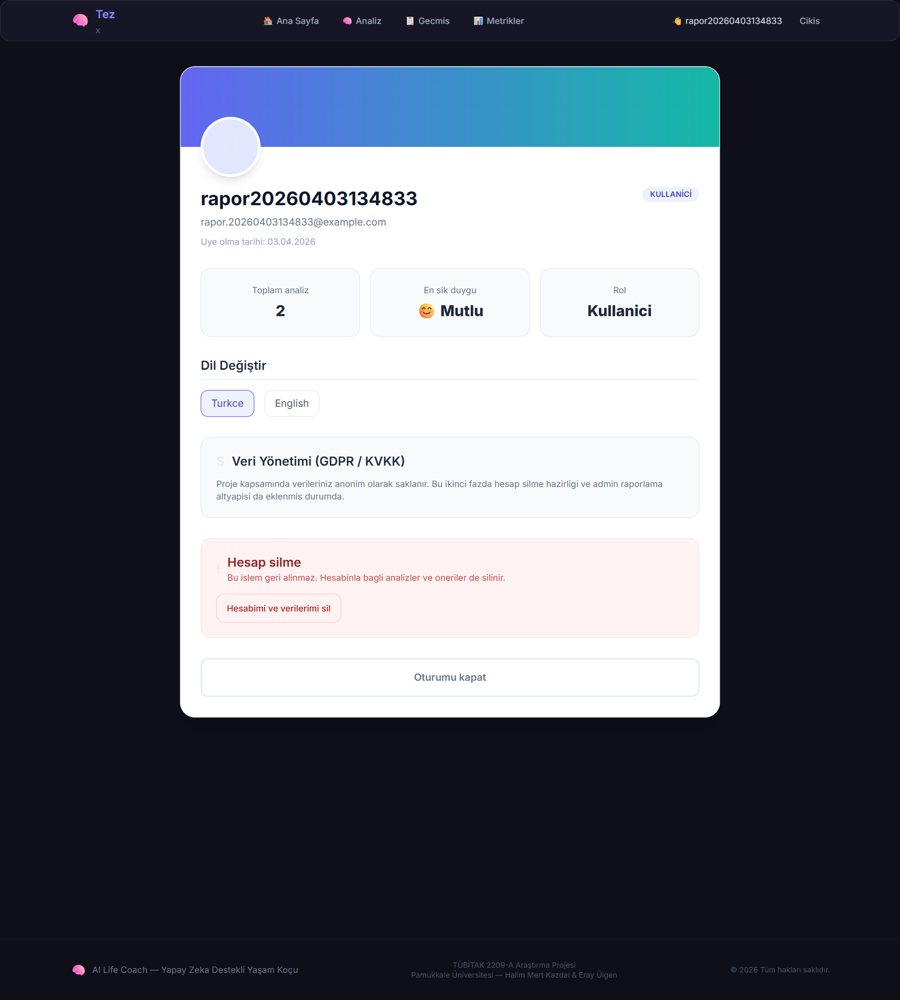
Bu dönem yalnızca kullanıcıya sonuç üretmekle kalınmamış, aynı zamanda bu sonuçların ne kadar faydalı bulunduğunu ölçen bir araştırma katmanı da eklenmiştir. Böylece proje, akademik değerlendirme açısından daha güçlü hale gelmiş; memnuniyet, doğruluk algısı ve öneri kalitesi gibi veriler ölçülebilir olmuştur.
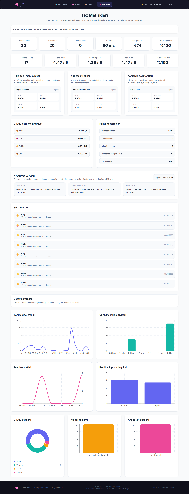
Genel memnuniyet, analiz doğruluğu, öneri kalitesi, faydalı bulma oranı ve tekrar kullanım niyeti.
Guest vs registered, yüz tespiti var / yok ve hızlı / derin analiz segmentleri ayrı izlenmektedir.
Proje yalnızca çalışan bir uygulama değil, aynı zamanda ölçümlenebilir bir araştırma prototipi haline gelmiştir.
Teknik tarafta proje yalnızca yerel dosya düzeyinde birleştirilmemiş, aynı zamanda container tabanlı olarak çalıştırılabilir hale getirilmiştir. Böylece danışmana veya jüriye ürünün “yeniden açılabilir” ve “tekrar üretilebilir” olması da güvence altına alınmıştır.
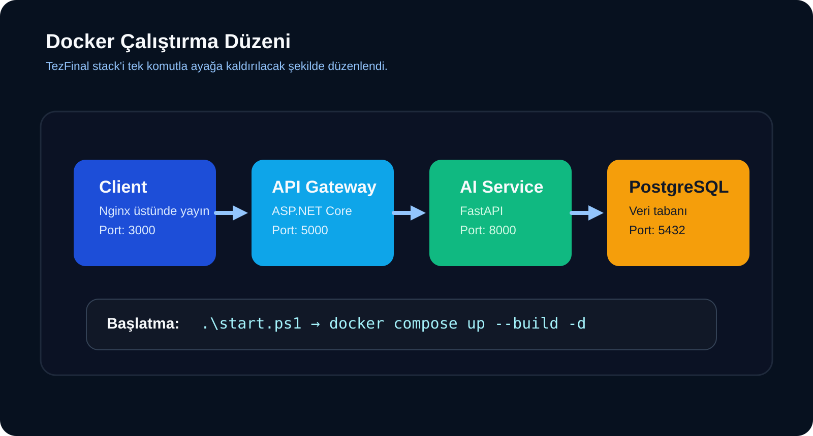
| Alan | Yapılan geliştirme | Proje katkısı |
|---|---|---|
| Backend çekirdek | MoodLens API omurgası korunarak auth, analyze, recommendations, history ve metrics katmanları genişletildi. | Sağlam veri akışı ve servis kararlılığı sağlandı. |
| Auth ve session | JWT tabanlı login/register akışı ve misafirden hesaba geçiş mekanizması kuruldu. | Kullanıcı deneyimi ile veri sürekliliği aynı anda korundu. |
| Feedback sistemi | Analiz bazlı geri bildirim modeli, API endpointleri ve sonuç ekranı formu geliştirildi. | Projeye araştırma ve ölçümleme boyutu eklendi. |
| Metrics katmanı | Dashboard, research metrics, segment bazlı memnuniyet ve grafik akışı genişletildi. | Sunum ve tez değerlendirmesi için anlamlı metrik altyapısı oluştu. |
| Performans | Route-level lazy loading ve metrics grafiklerinin ayrı chunk’a alınması sağlandı. | İlk yükleme performansı iyileştirildi, ürün daha akıcı hale geldi. |
| Dağıtım | Docker compose, env örnekleri ve başlatma scriptleri hazırlandı. | Projeyi tek komutla ayağa kaldırmak mümkün hale geldi. |
Proje bu rapor hazırlanırken canlı olarak çalıştırılmış, localhost üzerinden ekran görüntüleri alınmış ve container ortamında doğrulanmıştır. Bu durum, rapordaki görsellerin sadece tasarım örneği değil, gerçek çalışan sistemin kanıtı olduğunu göstermektedir.
Gelinen noktada proje, danışmana sunulabilecek bütünlüklü bir prototip haline gelmiştir. Kullanıcı deneyimi, veri akışı, geri bildirim toplama ve araştırma metrikleri tek sistem içinde birlikte çalışmaktadır. Bu aşama, final teslimin güçlü bir temelini oluşturmaktadır.
İkinci dönemin bu aşamasında temel hedef başarıyla gerçekleştirilmiştir: iki farklı projeden hareketle, güçlü backend yapısını koruyan ve güçlü frontend deneyimini kullanan çalışan bir nihai sistem elde edilmiştir. Bundan sonraki aşama, bu yapıyı daha da olgunlaştırmak; admin paneli, daha derin araştırma segmentleri, daha ayrıntılı kullanıcı geri bildirimleri ve ek optimizasyonlarla final teslim seviyesine taşımaktır.